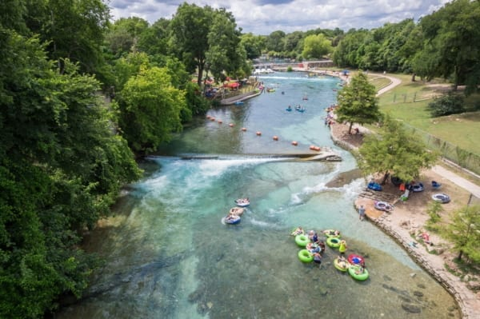

The Comal & Guadalupe Rivers
The Comal River is one of the shortest rivers in the United States, stretching just 2.5 miles, but it is also one of the most beloved. With clear, spring-fed water that stays around 72 degrees year-round, it is a favorite for tubing and swimming.
The Guadalupe River, much longer and more dynamic, offers excitement for adventurers. With scenic limestone cliffs, lush trees, and winding currents, it attracts kayakers, anglers, and tubers from across Texas. Portions of the river feature mild rapids, making it a great spot for river sports. Outfitters near Canyon Lake provide rentals and shuttles.
If you prefer a calmer experience, consider lounging at Prince Solms Park or floating through the famous Tube Chute. Both rivers offer safe, family-friendly areas as well as more adventurous stretches, depending on what kind of experience you are looking for.
Tips for River Visitors
- Bring sunscreen and water shoes
- Check river conditions before tubing
- Respect local rules regarding cans and containers
- Leave no trace—keep the rivers beautiful